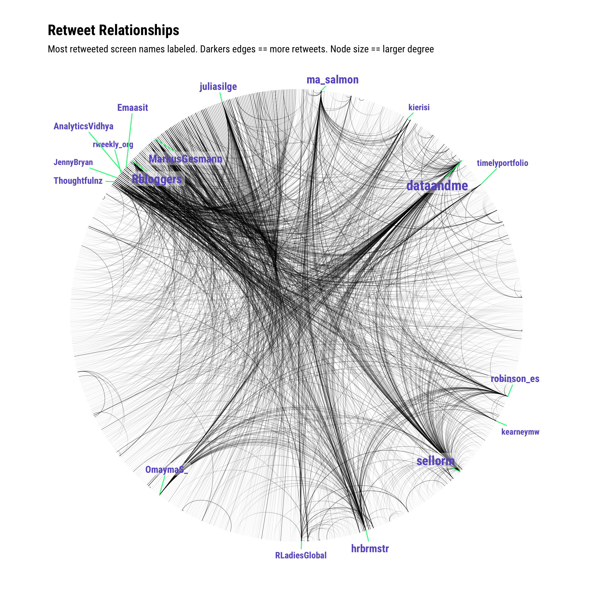

Recipe 7 Visualizing a Graph of Retweet Relationships
7.1 Problem
You want to visualize a graph of retweets.
7.2 Solution
There are a plethora of ways to visualize graph structures in R. One recent and popular one is ggraph.
Given the cookbook-nature of this book, we’ll cover one more visualization about retweet relationships. Let’s explore the entire retweet network and label the screen names with the most retweets over a given search term (and use #rstats again, but gather more tweets this time to truly make a spaghetti chart):
library(rtweet)
library(igraph)
library(hrbrthemes)
library(ggraph)
library(tidyverse)rstats <- search_tweets("#rstats", n=1500)
# same as previous recipe
filter(rstats, retweet_count > 0) %>%
select(screen_name, mentions_screen_name) %>%
unnest(mentions_screen_name) %>%
filter(!is.na(mentions_screen_name)) %>%
graph_from_data_frame() -> rt_gTo help de-clutter the vertex labels, we’ll only add labels for nodes that have a degree of 20 or more (rough guess — you should look at the degree distribution for more formal work). We’ll also include the degree for those nodes so we can size them properly:
V(rt_g)$node_label <- unname(ifelse(degree(rt_g)[V(rt_g)] > 20, names(V(rt_g)), ""))
V(rt_g)$node_size <- unname(ifelse(degree(rt_g)[V(rt_g)] > 20, degree(rt_g), 0)) Now, we’ll creatre the graph. Using ..index.. for the alpha channel will help show edge weight without too much extra effort. Note the heavy customization of geom_node_label(). Thomas made it way too easy to make beautiful network graphs with ggraph:
ggraph(rt_g, layout = 'linear', circular = TRUE) +
geom_edge_arc(edge_width=0.125, aes(alpha=..index..)) +
geom_node_label(aes(label=node_label, size=node_size),
label.size=0, fill="#ffffff66", segment.colour="springgreen",
color="slateblue", repel=TRUE, family=font_rc, fontface="bold") +
coord_fixed() +
scale_size_area(trans="sqrt") +
labs(title="Retweet Relationships", subtitle="Most retweeted screen names labeled. Darkers edges == more retweets. Node size == larger degree") +
theme_graph(base_family=font_rc) +
theme(legend.position="none")
7.3 See Also
- Enter
twitter network analysis rinto Google (seriously!). Lots of folks have worked in this space and blogged or wrote about their efforts.